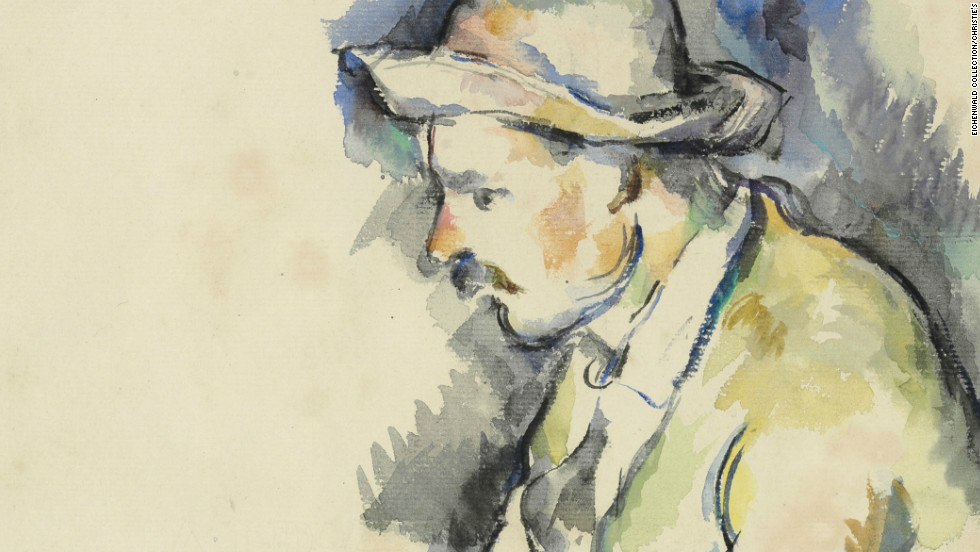

Akwarela Cézanne’a
Dziewiętnaście milionów dolarów na nowojorskiej aukcji za odnalezioną po sześćdziesięciu latach akwarelę Paula Cézanne’a? Bagatela.
Sto dziewiętnaście milionów dolarów za „Krzyk” Edvarda Muncha na aukcji w Sotheby’s? Porażające w równym niemal stopniu co samo dzieło.
Niemniej i tak najdroższym obrazem sprzedanym kiedykolwiek jest jedna z pięciu wersji „Les Joueurs de cartes” — „Gracze w karty” powędrowali do Kataru za rekordową sumę dwustu pięćdziesięciu milionów dolarów. Odnaleziona akwarela jest właśnie szkicem do owej serii obrazów.